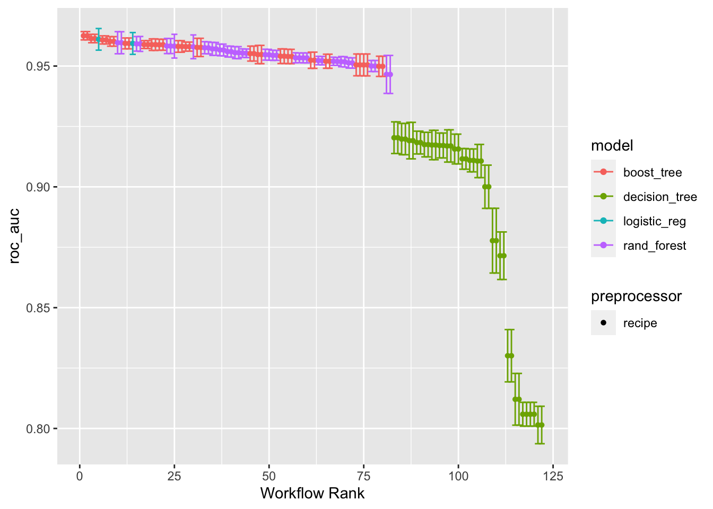
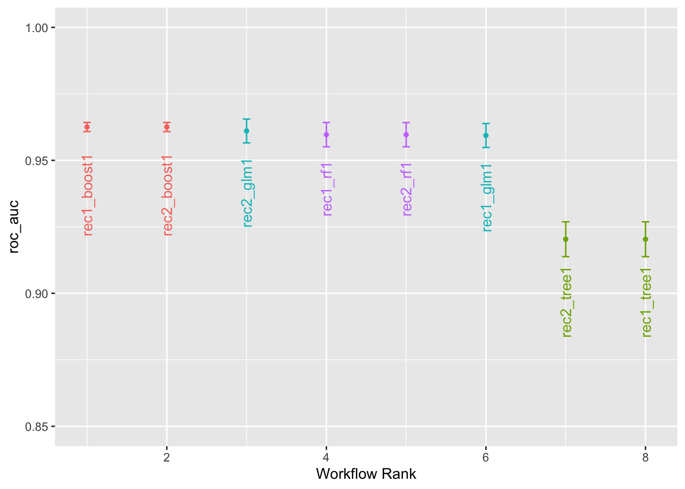

11 Ensemble Lerner
11.1 Lernsteuerung
11.1.1 Lernziele
- Sie können Algorithmen für Ensemble-Lernen erklären, d.i. Bagging, AdaBoost, XGBoost, Random Forest
- Sie wissen, anhand welche Tuningparamter man Overfitting bei diesen Algorithmen begrenzen kann
- Sie können diese Verfahren in R berechnen
11.1.2 Literatur
- Rhys, Kap. 8
11.2 Vorbereitung
In diesem Kapitel werden folgende R-Pakete benötigt:
11.3 Hinweise zur Literatur
Die folgenden Ausführungen basieren primär auf Rhys (2020), aber auch auf James u. a. (2021) und (weniger) Kuhn und Johnson (2013).
11.4 Wir brauchen einen Wald
Ein Pluspunkt von Entscheidungsb√§umen ist ihre gute Interpretierbarkeit. Man k√∂nnte behaupten, dass B√§ume eine typische Art des menschlichen Entscheidungsverhalten nachahmen: ‚ÄúWenn A, dann tue B, ansonsten tue C‚Äù (etc.). Allerdings: Einzelne Entscheidungsb√§ume haben oft keine so gute Prognosegenauigkeit. Der oder zumindest ein Grund ist, dass sie (zwar wenig Bias aber) viel Varianz aufweisen. Das sieht man z.B. daran, dass die Vorhersagegenauigkeit stark schwankt, w√§hlt man eine andere Aufteilung von Train- vs. Test-Sample. Anders gesagt: B√§ume overfitten ziemlich schnell. Und obwohl das No-Free-Lunch-Theorem zu den Grundfesten des maschinellen Lernens (oder zu allem wissenschaftlichen Wissen) geh√∂rt, kann man festhalten, dass sog. Ensemble-Lernen fast immer besser sind als einzelne Baummodelle. Kurz gesagt: Wir brauchen einen Wald: üå≥üå≥üå≥.1
11.5 Was ist ein Ensemble-Lerner?
Ensemble-Lerner kombinieren mehrere schwache Lerner zu einem starken Lerner. Das Paradebeispiel sind baumbasierte Modelle; darauf wird sich die folgende Ausführung auch begrenzen. Aber theoretisch kann man jede Art von Lerner kombinieren. Bei numerischer Prädiktion wird bei Ensemble-Lerner zumeist der Mittelwert als Optmierungskriterium herangezogen; bei Klassifikation (nominaler Prädiktion) hingegen die modale Klasse (also die häufigste). Warum hilft es, mehrere Modelle (Lerner) zu einem zu aggregieren? Die Antwort lautet, dass die Streuung der Mittelwerte sinkt, wenn die Stichprobengröße steigt. Zieht man Stichproben der Größe 1, werden die Mittelwerte stark variieren, aber bei größeren Stichproben (z.B. Größe 100) deutlich weniger2. Die Streuung der Mittelwerte in den Stichproben nennt man bekanntlich Standardefehler (se). Den se des Mittelwerts (\(se_M\)) für eine normalverteilte Variable \(X \sim \mathcal{N}(\mu, \sigma)\) gilt: \(se_{M} = \sigma / \sqrt(n)\), wobei \(\sigma\) die SD der Verteilung und \(\mu\) den Erwartungswert (“Mittelwert”) meint, und \(n\) ist die Stichprobengröße.
Je größer die Stichprobe, desto kleiner die Varianz des Schätzers (ceteris paribus). Anders gesagt: Größere Stichproben schätzen genauer als kleine Stichproben.
Aus diesem Grund bietet es sich an, schwache Lerner mit viel Varianz zu kombinieren, da die Varianz so verringert wird.
11.6 Bagging
11.6.1 Bootstrapping
Das erste baumbasierte Modell, was vorgestellt werden soll, basiert auf sog. Bootstrapping, ein Standardverfahren in der Statistik (James u. a. 2021).
Bootstrapping ist eine Nachahmung für folgende Idee: Hätte man viele Stichproben aus der relevanten Verteilung, so könnte man z.B. die Genauigkeit eines Modells \(\hat{f}_{\bar{X}}\) zur Schätzung des Erwartungswertes \(\mu\) einfach dadurch bestimmen, indem man se berechnet, also die Streuung der Mitterwerte \(\bar{X}\) berechnet. Außerdem gilt, dass die Präzision der Schätzung des Erwartungswerts steigt mit steigendem Stichprobenumfang \(n\). Wir könnten also für jede der \(B\) Stichproben, \(b=1,\ldots, B\), ein (Baum-)Modell berechnen, \(\hat{f}^b\), und dann deren Vorhersagen aggregieren (zum Mittelwert oder Modalwert). Das kann man formal so darstellen (James u. a. 2021):
\[\hat{f}_{\bar{X}} = \frac{1}{B}\sum_{b=1}^{B}\hat{f}^b\]
Mit diesem Vorgehen kann die Varianz des Modells \(\hat{f}_{\bar{X}}\) verringert werden; die Vorhersagegenauigkeit steigt.
Leider haben wir in der Regel nicht viele (\(B\)) Datensätze.
Daher “bauen” wir uns aus dem einzelnen Datensatz, der uns zur Verfügung steht, viele Datensätze. Das hört sich nach “too good to be true” an3 Weil es sich unglaubwürdig anhört, nennt man das entsprechende Verfahren (gleich kommt es!) auch “Münchhausen-Methode”, nach dem berühmten Lübgenbaron. Die Amerikaner ziehen sich übrigens nicht am Schopf aus dem Sumpf, sondern mit den Stiefelschlaufen (die Cowboys wieder), daher spricht man im Amerikanischen auch von der “Boostrapping-Methode”.
Diese “Pseudo-Stichproben” oder “Bootstrapping-Stichproben” sind aber recht einfach zu gewinnen.. Gegeben sei Stichprobe der Größe \(n\):
- Ziehe mit Zurücklegen (ZmZ) aus der Stichprobe \(n\) Beobachtungen
- Fertig ist die Bootstrapping-Stichprobe.
Abbildung 11.1 verdeutlicht das Prinzip des ZMZ, d.h. des Bootstrappings. Wie man sieht, sind die Bootstrap-Stichproben (rechts) vom gleichen Umfang \(n\) wie die Originalstichprobe (links). Allerdins kommen nicht alle Fälle (in der Regel) in den “Boostrap-Beutel” (in bag), sondern einige Fälle werden oft mehrfach gezogen, so dass einige Fälle nicht gezogen werden (out of bag).

Man kann zeigen, dass ca. 2/3 der Fälle gezogen werden, bzw. ca. 1/3 nicht gezogen werden. Die nicht gezogenen Fälle nennt man auch out of bag (OOB).
Für die Entwicklung des Bootstrapping wurde der Autor, Bradley Efron, im Jahr 2018 mit dem internationalen Preis für Statistik ausgezeichnet;
“While statistics offers no magic pill for quantitative scientific investigations, the bootstrap is the best statistical pain reliever ever produced,” says Xiao-Li Meng, Whipple V. N. Jones Professor of Statistics at Harvard University.“
11.6.2 Bagging-Algorithmus
Bagging, die Kurzform für Bootstrap-Aggregation ist wenig mehr als die Umsetzung des Boostrappings.
Der Algorithmus von Bagging kann so beschrieben werden:
- Wähle \(B\), die Anzahl der Boostrap-Stichproben und damit auch Anzahl der Submodelle (Lerner)
- Ziehe \(B\) Boostrap-Stichproben
- Berechne das Modell \(\hat{f}^{*b}\) für jede der \(B\) Stichproben (typischerweise ein einfacher Baum)
- Schicke die Test-Daten durch jedes Sub-Modell
- Aggregiere ihre Vorhersage zu einem Wert (Modus bzw. Mittelwert) pro Fall aus dem Test-Sample, zu \(\hat{f}_{\text{bag}}\)
Anders gesagt:
\[\hat{f}_{\text{bag}} = \frac{1}{B}\sum_{b=1}^{B}\hat{f}^{*b}\]
Der Bagging-Algorithmus ist in Abbildung Abbildung 11.2 dargestellt.
flowchart LR D[Datensatz] --> B1[Baum 1] --> M[Modus als Vorhersagewert] D-->B2[Baum 2] --> M D-->B3[Baum ...]--->M D-->B4[Baum B]--->M
Die Anzahl der Bäume (allgemeiner: Submodelle) \(B\) ist häufig im oberen drei- oder niedrigem vierstelligen Bereich, z.B. \(B=1000\). Eine gute Nachricht ist, dass Bagging nicht überanpasst, wenn \(B\) groß wird.
11.6.3 Variablenrelevanz
Man kann die Relevanz der Prädiktoren in einem Bagging-Modell auf mehrere Arten schätzen. Ein Weg (bei numerischer Prädiktion) ist, dass man die RSS-Verringerung, die durch Aufteilung anhand eines Prädiktors erzeugt wird, mittelt über alle beteiligten Bäume (Modelle). Bei Klassifikation kann man die analog die Reduktion des Gini-Wertes über alle Bäume mitteln und als Schätzwert für die Relevanz des Prädiktors heranziehen.
11.6.4 Out-of-Bag-Vorhersagen
Da nicht alle Fälle der Stichprobe in das Modell einfließen (sondern nur ca. 2/3), kann der Rest der Fälle zur Vorhersage genutzt werden. Bagging erzeugt sozusagen innerhalb der Stichprobe selbständig ein Train- und ein Test-Sample. Man spricht von Out-of-Bag-Schätzung (OOB-Schätzung). Der OOB-Fehler (z.B. MSE bei numerischen Modellen und Genauigkeit bei nominalen) ist eine valide Schätzung des typischen Test-Sample-Fehlers.
Hat man aber Tuningparameter, so wird man dennoch auf die typische Train-Test-Aufteilung zurückgreifen, um Overfitting durch das Ausprobieren der Tuning-Kandidaten zu vermeiden (was sonst zu Zufallstreffern führen würde bei genügend vielen Modellkandidaten).
11.7 Random Forests
Random Forests (“Zufallswälder”) sind eine Weiterentwicklung von Bagging-Modellen. Sie sind Bagging-Modelle, aber haben noch ein Ass im Ärmel: Und zwar wird an jedem Slit (Astgabel, Aufteilung) nur eine Zufallsauswahl an \(m\) Prädiktoren berücksichtigt. Das hört sich verrückt an: “Wie, mit weniger Prädiktoren soll eine bessere Vorhersage erreicht werden?!” Ja, genau so ist es! Nehmen Sie an, es gibt im Datensatz einen sehr starken und ein paar mittelstarke Prädiktoren; der Rest der Prädiktoren ist wenig relevant. Wenn Sie jetzt viele “gebootstrapte”4 ziehen, werden diese Bäume sehr ähnlich sein: Der stärkste Prädiktor steht vermutlich immer ob an der Wurzel, dann kommen die mittelstarken Prädiktoren. Jeder zusätzliche Baum trägt dann wenig neue Information bei. Anders gesagt: Die Vorhersagen der Bäume sind dann sehr ähnlich bzw. hoch korreliert. Bildet man den Mittelwert von hoch korrelierten Variablen, verringert sich leider die Varianzu nur wenig im Vergleich zu nicht oder gering korrelierten Variablen (James u. a. 2021). Dadurch dass Random Forests nur \(m\) der \(p\) Prädiktoren pro Split zulassen, werden die Bäume unterschiedlicher. Wir “dekorrelieren” die Bäume. Bildet man den Mittelwert von gering(er) korrelierten Variablen, so ist die Varianzreduktion höher - und die Vohersage genauer. Lässt man pro Split \(m=p\) Prädiktoren zu, so gleicht Bagging dem Random Forest. Die Anzahl \(m\) der erlaubten Prädiktoren werden als Zufallstichprobe aus den \(p\) Prädiktoren des Datensatzes gezogen (ohne Zurücklegen). \(m\) ist ein Tuningparameter; \(m=\sqrt{p}\) ist ein beliebter Startwert. In den meisten Implementationen wird \(m\) mit mtry bezeichnet (so auch in Tidymodels).
Der Random-Forest-Algorithmus ist in Abbildung 11.3 illustriert: Mit jedem Quadrat ist ein Baummodell symbolisiert. In jedem Baum wird an jedem Split (ohne Zurücklegen) eine Auswahl an zu berücksichtigenden Prädiktoren gezogen.
Abbildung 11.4 vergleicht die Test-Sample-Vorhersagegüte von Bagging- und Random-Forest-Algorithmen aus James u. a. (2021). In diesem Fall ist die Vorhersagegüte deutlich unter der OOB-Güte; laut James u. a. (2021) ist dies hier “Zufall”.

Den Effekt von \(m\) (Anzahl der Prädiktoren pro Split) ist in Abbildung 11.5 dargestellt (James u. a. 2021). Man erkennt, dass der Zusatznutzen an zusätzlichen Bäumen, \(B\), sich abschwächt. Daher ist die Anzahl \(B\) an Bäumen nicht wirklich ein Tuningparameter. Mit ein paar Hundert oder wenigen Tausend Bäumen ist man auf der sicheren Seite.5. \(m=\sqrt{p}\) schneidet wie erwartet am besten ab.

11.8 Boosting
Im Unterschied zu Bagging und Random-Forest-Modellen wird beim Boosting der “Wald” sequenziell entwickelt, nicht gleichzeitig wie bei den anderen vorgestellten “Wald-Modellen”. Die zwei bekanntesten Implementierungen bzw. Algorithmus-Varianten sind AdaBoost und XGBoost. Gerade XGBoost hat den Ruf, hervorragende Vorhersagen zu leisten. Auf Kaggle gewinnt nach einigen Berichten oft XGBoost. Nur neuronale Netze schneiden besser ab. Random-Forest-Modelle kommen nach diesem Bereich auf Platz 3. Allerdings benötigen neuronale Netzen oft riesige Stichprobengrößen und bei spielen ihre Nuanciertheit vor allem bei komplexen Daten wie Bildern oder Sprache aus. Für “rechteckige” Daten (also aus einfachen, normalen Tabellen) wird ein baumbasiertes Modell oft besser abschneiden.
Die Idee des Boosting ist es, anschaulich gesprochen, aus Fehlern zu lernen: Fitte einen Baum, schau welche Fälle er schlecht vorhergesagt hat, konzentriere dich beim nächsten Baum auf diese Fälle und so weiter.
Wie andere Ensemble-Methoden auch kann Boosting theoretisch für beliebige Algorithmen eingesetzt werden. Es macht aber Sinn, Boosting bei “schwachen Lernern” einzusetzen. Typisches Beispiel ist ein einfacher Baum; “einfach” soll heißen, der Baum hat nur wenig Gabeln oder vielleicht sogar nur eine einzige. Dann spricht man von einem Stumpf, was intuitiv gut passt.
11.8.1 AdaBoost
Der AdaBoost-Algorithmus funktioniert, einfach dargestellt, wie folgt. Zuerst hat jeder Fall \(i\) im Datensatz des gleiche Gewicht. Die erste (und alle weiteren) Stichprobe werden per Bootstrapping aus dem Datensatz gezogen. Dabei ist die Wahrscheinlichkeit, gezogen zu werden, proportional zum Gewicht des Falles, \(w_i\). Da im ersten Durchgang die Gewichte identisch sind, haben zunächst alle Fälle die gleiche Wahrscheinlichkeit, in das Bootstrap-Sample gezogen zu werden. Die Bäume bei AdaBoost sind eigentlich nur “Stümpfe”: Sie bestehen aus einem einzelnen Split, s. Abbildung 11.6.
flowchart LR root --> leaf1 root --> leaf2
Nach Berechnung des Baumes und der Vorhersagen werden die richtig klassifizierten Fälle heruntergewichtet und die falsch klassifizierten Fälle hoch gewichtet, also stärker gewichtet (bleiben wir aus Gründen der Einfachheit zunächst bei der Klassifikation). Dieses Vorgehen folgt dem Gedanken, dass man sich seine Fehler genauer anschauen muss, die falsch klassifizierten Fälle sozusagen mehr Aufmerksamkeit bedürfen. Das nächste (zweite) Modell zieht ein weiteres Bootstrap-Sample. Jetzt sind allerdings die Gewichte schon angepasst, so dass mehr Fälle, die im vorherigen Modell falsch klassifiziert wurden, in den neuen (zweiten) Baum gezogen werden. Das neue Modell hat also bessere Chancen, die Aspekte, die das Vorgänger-Modell übersah zu korrigieren bzw. zu lernen. Jetzt haben wir zwei Modelle. Die können wir aggregieren, genau wie beim Bagging: Der Modus der Vorhersage über alle (beide) Bäume hinwig ist dann die Vorhersage für einen bestimmten Fall (“Fall” und “Beobachtung” sind stets synonym für \(y_i\) zu verstehen). So wiederholt sich das Vorgehen für \(B\) Bäume: Die Gewichte werden angepasst, das neue Modell wird berechnet, alle Modelle machen ihre Vorhersagen, per Mehrheitsbeschluss - mit gewichteten Modellen - wird die Vorhersage bestimmt pro Fall. Irgendwann erreichen wir die vorab definierte Maximalzahl an Bäumen, \(B\), und das Modell kommt zu einem Ende.
Da das Modell die Fehler seiner Vorgänger reduziert, wird der Bias im Gesamtmodell verringert. Da wir gleichzeitig auch Bagging vornehmen, wird aber die Varianz auch verringert. Klingt schon wieder (fast) nach Too-Good-to-be-True!
Das Gewicht \(w_i^b\) des \(i\)ten Falls im \(b\)ten Modell von \(B\) berechnet sich wie folgt (Rhys 2020):
\[ w_i^b = \begin{cases} w_i^{b-1} \cdot e^{-\text{model weight}} \qquad \text{wenn korrekt klassifiziert} \\ w_i^{b-1} \cdot e^{\text{model weight}} \qquad \text{wenn inkorrekt klassifiziert} \\ \end{cases}\]
Das Modellgewicht \(mw\) berechnet sich dabei so (Rhys 2020):
\[mw_b = 0.5 \cdot log\left( \frac{1-p(\text{inkorrect})}{p(\text{korrekt})} \right) \propto \mathcal{L(p)} \]
\(p(\cdot)\) ist der Anteil (Wahrscheinlichkeit) einer Vorhersage.
Das Modellgewicht ist ein Faktor, der schlechtere Modelle bestraft. Das folgt dem Gedanken, dass schlechteren Modellen weniger Gehört geschenkt werden soll, aber schlecht klassifizierten Fällen mehr Gehör.
Das Vorgehen von AdaBoost ist in Abbildung 11.7 illustriert.
11.8.2 XGBoost
XGBoost ist ein Gradientenverfahren, eine Methode also, die die Richtung des parziellen Ableitungskoeffizienten als Optimierungskriterium heranzieht. XGBoost ist ähnlich zu AdaBoost, nur dass Residuen modelliert werden, nicht \(y\). Die Vorhersagefehler von \(\hat{f}^b\) werden die Zielvariable von \(\hat{f}^{b+1}\). Ein Residuum ist der Vorhersagefehler, bei metrischen Modellen etwa RMSE, oder schlicht \(r_i = y_i - \hat{y}_i\). Details finden sich z.B. hier, dem Original XGBoost-Paper (Chen und Guestrin 2016).
Die hohe Vorhersagegüte von Boosting-Modellen ist exemplarisch in Abbildung 11.8 dargestellt (James u. a. 2021, 358ff). Allerdings verwenden die Autoren Friedmans (2001) Gradient Boosting Machine, eine weitere Variante des Boosting .
11.9 Tidymodels
11.9.1 Datensatz Churn
Wir betrachten einen Datensatz zur Kundenabwanderung (Churn) aus dieser Quelle; Datendatei.
Allerdings liegen die Daten jetzt auch auf diesem Repo, da sich mein Browser jüngst über Datenschutzprobleme bei Quellwebseite beschwert hat.
churn_df <- read_rds('data/churn_data.rds')Werfen wir einen Blick in die Daten, s. Tabelle 11.1, um einen ersten Eindruck zu bekommen.
| canceled_service | enrollment_discount | spouse_partner | dependents | phone_service | internet_service | online_security | online_backup | device_protection | tech_support | streaming_tv | streaming_movies | contract | paperless_bill | payment_method | months_with_company | monthly_charges | late_payments |
|---|---|---|---|---|---|---|---|---|---|---|---|---|---|---|---|---|---|
| yes | no | no | no | multiple_lines | fiber_optic | yes | yes | yes | no | no | no | one_year | no | credit_card | 30 | 51.01440 | 3 |
| yes | no | yes | yes | multiple_lines | fiber_optic | no | yes | yes | yes | yes | no | two_year | yes | electronic_check | 39 | 80.42466 | 4 |
| yes | yes | no | no | single_line | fiber_optic | no | no | no | no | yes | yes | month_to_month | yes | mailed_check | 1 | 75.88737 | 3 |
| yes | no | yes | yes | single_line | fiber_optic | yes | no | no | no | yes | no | two_year | no | credit_card | 29 | 81.96467 | 3 |
| yes | yes | no | no | single_line | digital | no | no | no | no | yes | yes | month_to_month | yes | bank_draft | 9 | 101.34257 | 5 |
| yes | no | yes | no | single_line | fiber_optic | yes | yes | no | yes | yes | yes | month_to_month | no | mailed_check | 14 | 72.01285 | 4 |
11.9.2 Data Splitting und CV
11.9.3 Feature Engineering
Hier definieren wir zwei Rezepte. Gleichzeitig verändern wir die Prädiktoren (normalisieren, dummysieren, …). Das nennt man auch Feature Engineering.
churn_recipe1 <- recipe(canceled_service ~ ., data = churn_training) %>%
step_normalize(all_numeric(), -all_outcomes()) %>%
step_dummy(all_nominal(), -all_outcomes())
churn_recipe2 <- recipe(canceled_service ~ ., data = churn_training) %>%
step_YeoJohnson(all_numeric(), -all_outcomes()) %>%
step_normalize(all_numeric(), -all_outcomes()) %>%
step_dummy(all_nominal(), -all_outcomes())step_YeoJohnson() reduziert Schiefe in der Verteilung.
11.9.4 Modelle
tree_model <- decision_tree(cost_complexity = tune(),
tree_depth = tune(),
min_n = tune()) %>%
set_engine('rpart') %>%
set_mode('classification')
rf_model <- rand_forest(mtry = tune(),
trees = tune(),
min_n = tune()) %>%
set_engine('ranger') %>%
set_mode('classification')
boost_model <- boost_tree(mtry = tune(),
min_n = tune(),
trees = tune()) %>%
set_engine("xgboost", nthreads = parallel::detectCores()) %>%
set_mode("classification")
glm_model <- logistic_reg()11.9.5 Modelle berechnen mit Tuning, einzeln
Wir könnten jetzt jedes Modell einzeln tunen, wenn wir wollen.
11.9.5.1 Baum
Im Standard werden 10 Modellkandidaten getuned.
tree_fitSchauen wir uns das Objekt etwas näher an:
tree_fit$.metrics[[1]]30 Zeilen: 3 Gütemetriken (Sens, Spec, ROC AUC) mit je 10 Werten (Submodellen), gibt 30 Koeffizienten.
Für jeden der 5 Faltungen haben wir also 10 Submodelle.
Welches Modell ist das beste?
show_best(tree_fit)Aha, das sind die fünf besten Modelle, bzw. ihre Tuningparameter, ihre mittlere Güte zusammen mit dem Standardfehler.
autoplot(tree_fit)11.9.5.2 RF
Was für Tuningparameter hat den der Algorithmus bzw. seine Implementierung?
show_model_info("rand_forest")
## Information for `rand_forest`
## modes: unknown, classification, regression, censored regression
##
## engines:
## classification: randomForest, ranger¹, spark
## regression: randomForest, ranger¹, spark
##
## ¹The model can use case weights.
##
## arguments:
## ranger:
## mtry --> mtry
## trees --> num.trees
## min_n --> min.node.size
## randomForest:
## mtry --> mtry
## trees --> ntree
## min_n --> nodesize
## spark:
## mtry --> feature_subset_strategy
## trees --> num_trees
## min_n --> min_instances_per_node
##
## fit modules:
## engine mode
## ranger classification
## ranger regression
## randomForest classification
## randomForest regression
## spark classification
## spark regression
##
## prediction modules:
## mode engine methods
## classification randomForest class, prob, raw
## classification ranger class, conf_int, prob, raw
## classification spark class, prob
## regression randomForest numeric, raw
## regression ranger conf_int, numeric, raw
## regression spark numericDa die Berechnung einiges an Zeit braucht, kann man das (schon früher einmal berechnete) Ergebnisobjekt von der Festplatte lesen (sofern es existiert). Ansonsten berechnet man neu:
So kann man das berechnete Objekt abspeichern auf Festplatte, um künftig Zeit zu sparen6:
write_rds(rf_fit1, file = "objects/rf_fit1.rds")rf_fit1show_best(rf_fit1)11.9.5.3 XGBoost
Wieder auf Festplatte speichern:
write_rds(boost_fit1, file = "objects/boost_fit1.rds")Und so weiter.
11.9.6 Workflow-Sets
11.9.6.1 Workflow-Set definieren
Ein Workflow-Set besteht aus
- einem oder mehreren Rezepten
- einem oder mehreren Modellen
die beliebig kombiniert sein können. Im Standard werden alle Rezepte mit allen Modellen kombiniert.
Beispiel 11.1 In einem Workflow-Set sind 3 Rezepte und 4 Modelle definiert. Daher werden im Standard 12 Workflows gefittet.\(\square\)
Infos zu workflow_set bekommt man wie gewohnt mit ?workflow_set.
Im Standard werden alle Rezepte und Modelle miteinander kombiniert (cross = TRUE), also preproc * models Modelle gefittet.
11.9.7 Workflow-Set tunen
if (file.exists("objects/churn_model_set.rds")) {
churn_model_set <- read_rds("objects/churn_model_set.rds")
} else {
tic()
churn_model_set <-
all_workflows %>%
workflow_map(
resamples = churn_folds,
grid = 20,
metrics = metric_set(roc_auc),
seed = 42, # reproducibility
verbose = TRUE)
toc()
}Da die Berechnung schon etwas Zeit braucht, kann es vielleicht Sinn machen, das Modell (bzw. das Ergebnisobjekt) auf Festplatte zu speichern:
write_rds(churn_model_set, file = "objects/churn_model_set.rds")Achtung Dieser Schritt ist gefährlich: Wenn Sie Ihr Rezept und Fit-Objekt ändern, kriegt das Ihre Festplatte nicht unbedingt mit. Sie könnten also unbemerkt mit dem alten Objekt von Ihrer Festplatte weiterarbeiten, ohne durch eine Fehlermeldung gewarnt zu werden. Ein viel besserer Ansatz wird durch das R-Paket targets bereitgestellt.
Entsprechend kann man ein auf der Festplatte geparktes Modellobjekt wieder importieren:
churn_model_set <- read_rds(file = "objects/churn_model_set.rds")11.9.8 Ergebnisse im Train-Sest
Hier ist die Rangfolge der Modelle unseres Workflow-Sets, geordnet nach mittlerem ROC-AUC:
rank_results(churn_model_set, rank_metric = "roc_auc")Die Rangfolge der Modellgüte (in den Validierungs-Samples) kann man sich mit autoplot komformtabel ausgeben lassen, s. Abbildung 11.9.
autoplot(churn_model_set, metric = "roc_auc")
11.9.9 Bestes Modell
Und hier nur der beste Kandidat pro Algorithmus:
autoplot(churn_model_set, metric = "roc_auc", select_best = "TRUE") +
geom_text(aes(y = mean - .01, label = wflow_id), angle = 90, hjust = 1) +
theme(legend.position = "none") +
lims(y = c(0.85, 1))
Boosting hat - knapp - am besten abgeschnitten. Allerdings sind Random Forest und die schlichte, einfache logistische Regression auch fast genau so gut. Das wäre ein Grund für das einfachste Modell, das GLM, zu votieren. Zumal die Interpretierbarkeit am besten ist. Alternativ könnte man sich für das Boosting-Modell aussprechen.
Man kann sich das beste Submodell auch von Tidymodels bestimmen lassen. Das scheint aber (noch) nicht für ein Workflow-Set zu funktionieren, sondern nur für das Ergebnisobjekt von tune_grid.
select_best(churn_model_set, metric = "roc_auc")
## Error in `select_best()`:
## ! No `select_best()` exists for this type of object.rf_fit1 haben wir mit tune_grid() berechnet; mit diesem Modell kann select_best() arbeiten:
select_best(rf_fit1)Aber wir können uns händisch behelfen.
Schauen wir uns mal die Metriken (Vorhersagegüte) an:
rec1_boost1 scheint das beste Modell zu sein.
best_model_params <-
extract_workflow_set_result(churn_model_set, "rec1_boost1") %>%
select_best()
best_model_params11.9.10 Finalisisieren
Wir entscheiden uns mal für das Boosting-Modell, rec1_boost1. Diesen Workflow, in finalisierter Form, brauchen wir für den “final Fit”. Finalisierte Form heißt:
- Schritt 1: Nimm den passenden Workflow, hier
rec1undboost1; das hatte uns obenrank_results()verraten. - Schritt 2: Update (Finalisiere) ihn mit den besten Tuningparameter-Werten
# Schritt 1:
best_wf <-
all_workflows %>%
extract_workflow("rec1_boost1")
best_wf
## ══ Workflow ════════════════════════════════════════════════════════════════════
## Preprocessor: Recipe
## Model: boost_tree()
##
## ── Preprocessor ────────────────────────────────────────────────────────────────
## 2 Recipe Steps
##
## • step_normalize()
## • step_dummy()
##
## ── Model ───────────────────────────────────────────────────────────────────────
## Boosted Tree Model Specification (classification)
##
## Main Arguments:
## mtry = tune()
## trees = tune()
## min_n = tune()
##
## Engine-Specific Arguments:
## nthreads = parallel::detectCores()
##
## Computational engine: xgboostJetzt finalisieren wir den Workflow, d.h. wir setzen die Parameterwerte des besten Submodells ein:
# Schritt 2:
best_wf_finalized <-
best_wf %>%
finalize_workflow(best_model_params)
best_wf_finalized
## ══ Workflow ════════════════════════════════════════════════════════════════════
## Preprocessor: Recipe
## Model: boost_tree()
##
## ── Preprocessor ────────────────────────────────────────────────────────────────
## 2 Recipe Steps
##
## • step_normalize()
## • step_dummy()
##
## ── Model ───────────────────────────────────────────────────────────────────────
## Boosted Tree Model Specification (classification)
##
## Main Arguments:
## mtry = 6
## trees = 80
## min_n = 21
##
## Engine-Specific Arguments:
## nthreads = parallel::detectCores()
##
## Computational engine: xgboost11.9.11 Last Fit
fit_final <-
best_wf_finalized %>%
last_fit(churn_split)
fit_finalcollect_metrics(fit_final)11.9.12 Variablenrelevanz
Um die Variablenrelevanz zu plotten, müssen wir aus dem Tidymodels-Ergebnisobjekt das eigentliche Ergebnisobjekt herausziehen, von der R-Funktion, die die eigentliche Berechnung durchführt, das wäre glm() bei einer logistischen Regression oder xgboost::xgb.train() bei XGBoost:
fit_final %>%
extract_fit_parsnip()
## parsnip model object
##
## ##### xgb.Booster
## raw: 100.9 Kb
## call:
## xgboost::xgb.train(params = list(eta = 0.3, max_depth = 6, gamma = 0,
## colsample_bytree = 1, colsample_bynode = 0.285714285714286,
## min_child_weight = 21L, subsample = 1), data = x$data, nrounds = 80L,
## watchlist = x$watchlist, verbose = 0, nthreads = 8L, nthread = 1,
## objective = "binary:logistic")
## params (as set within xgb.train):
## eta = "0.3", max_depth = "6", gamma = "0", colsample_bytree = "1", colsample_bynode = "0.285714285714286", min_child_weight = "21", subsample = "1", nthreads = "8", nthread = "1", objective = "binary:logistic", validate_parameters = "TRUE"
## xgb.attributes:
## niter
## callbacks:
## cb.evaluation.log()
## # of features: 21
## niter: 80
## nfeatures : 21
## evaluation_log:
## iter training_logloss
## 1 0.5565164
## 2 0.4757130
## ---
## 79 0.1926248
## 80 0.1922523Dieses Objekt übergeben wir dann an vip:
11.9.13 ROC-Curve
Eine ROC-Kurve berechnet Sensitivität und Spezifität aus den Vorhersagen, bzw. aus dem Vergleich von Vorhersagen und wahrem Wert (d.h. der beobachtete Wert).
Ziehen wir also zuerst die Vorhersagen heraus:
fit_final %>%
collect_predictions()Praktischerweise werden die “wahren Werte” (also die beobachtaten Werte), canceled_service, ausch angegeben.
Dann berechnen wir die roc_curve und autoplotten sie, s. Abbildung 11.10.
11.10 Aufgaben
Schauen Sie sich mal die Kategorie trees auf Datenwerk an.
Alternativ bietet die Kategorie tidymodels eine Sammlung von Aufgaben rund um das R-Paket Tidymodels; dort können Sie sich Aufgaben anpassen.
11.11 Fallstudien
11.11.1 Fallstudien mit Workflow-Sets
11.11.2 Weitere Fallstudien mit Tidymodels-Bezug
- Fallstudie Vulkanausbrüche
- Fallstudie Brettspiele mit XGBoost
- Einfache Durchführung eines Modellierung mit XGBoost
- Fallstudie Oregon Schools
- Fallstudie Churn
- Fallstudie Ikea
- Fallstudie Wasserquellen in Sierra Leone
- Fallstudie Bäume in San Francisco
- Fallstudie Vulkanausbrüche
- Fallstudie Brettspiele mit XGBoost
11.12 Vertiefung
Übrigens gehört zu den weiteren Vorteilen von Bäumen, dass sie die Temperatur absenken; zu Zeiten von Hitzewellen könnte das praktisch sein. Ansonsten erzeugen sie aber nur Luft und haben auch sonst kaum erkennbaren Nutzen. Bäume stellen zum Beispiel nie WLAN bereit.↩︎
bei Fat-Tails-Variablen muss man diese Aussage einschränken↩︎
Wenn es einen No-Free-Lunch-Satz gibt, müsste es auch einen Too-Good-to-be-True-Satz geben, den wir hiermit postulieren.↩︎
Schlimmes Denglisch↩︎
Wer sich die Rechenressourcen leisten kann üí∏‚Ü©Ô∏é
Aber Vorsicht, dass man nicht vergisst, diese Objekte zu aktualisieren.↩︎